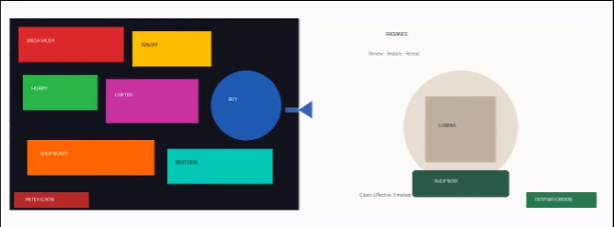
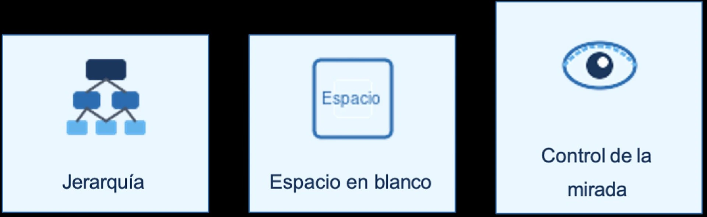
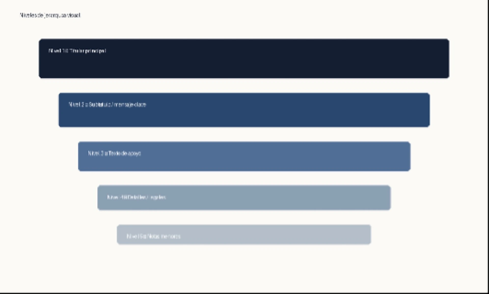
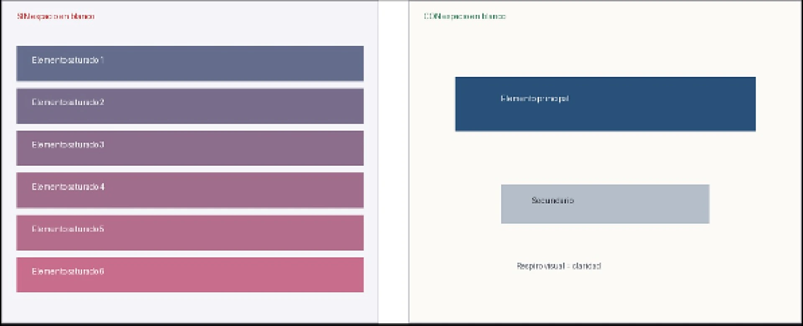

Diseño Visual
Del caos al orden: el lenguaje estratégico de la forma, el color y el espacio.
Pantalla dividida de apertura: Caos (izquierda) vs Orden (derecha). Mismo producto, distinta estructura.
El buen diseño es invisible porque funciona tan bien que el usuario solo consume el mensaje.

1. ¿Sabías que…?
El Diseño Visual no es mera decoración, sino un lenguaje estratégico y funcional que organiza forma, color, tipografía y espacio para transmitir un mensaje de manera intencional. El objetivo es llevar al usuario de “el diseño se ve bonito” a “el diseño se ve así porque funciona así”.
2. Principios de Diseño Visual
Estos cinco principios guían la construcción de cualquier interfaz o pieza gráfica. Cada uno responde a una pregunta concreta: ¿qué se ve primero?, ¿dónde respira el ojo?, ¿cómo se controla la mirada?, ¿qué comunica el color?, ¿qué tipografía sostiene el mensaje?
- Jerarquía: orden de importancia visual: titular → imagen → CTA → texto de apoyo.
- Espacio en blanco: el “respiro” que evita la saturación y mejora la legibilidad.
- Control de la mirada: líneas, contraste y alineación que dirigen el recorrido del ojo.
- Color: contraste, significado emocional y énfasis estratégico.
- Tipografía: familias, pesos y tamaños que construyen la jerarquía textual.
3. Jerarquía Visual en Acción
La jerarquía visual organiza los elementos de mayor a menor importancia. Un recorrido típico guiado por el ojo es:
- Titular – captura la atención inmediata.
- Imagen / producto – refuerza el mensaje.
- CTA (Call to Action) – invita a la acción.
- Texto de apoyo – aporta detalle sin competir.
El buen diseño no embellece: organiza, guía y comunica con intención.


4. Videos: Principios y Jerarquías del Diseño Visual
Estos videos explican de forma clara los principios del diseño visual y cómo se aplica la jerarquía para guiar la mirada del usuario. Ideal para reforzar lo visto en las secciones anteriores.
Principios del Diseño Visual
Énfasis, jerarquía, escala, unidad y variedad. Curso de Google UX Design.
Ver en YouTube ↗Jerarquía en el diseño (Canva)
El principio más importante: cómo priorizar elementos y guiar la mirada del usuario.
Ver en YouTube ↗Jerarquía – Principio de diseño gráfico
Control de la información visual: escala, color, contraste y espacio.
Ver en YouTube ↗5. Quizzes Cortos
Pon a prueba lo que aprendiste. Selecciona la respuesta y recibe feedback inmediato.
1. ¿Qué elemento suele captar primero la atención en una jerarquía visual bien diseñada?
2. ¿Cuál es el principal beneficio del espacio en blanco?
3. En la comparativa Caos vs Orden, ¿qué hace que el lado “Orden” se entienda más rápido?
4. ¿Qué principio dirige el recorrido de la mirada del usuario?
6. ¡Recuerda!
El buen diseño no embellece: organiza, guía y comunica con intención.
Espacio en blanco: saturación vs. respiro visual = claridad.
